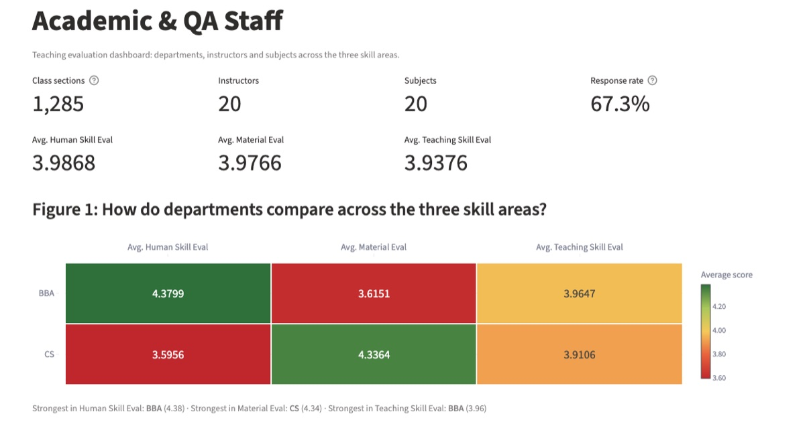

Data Visualization
Teaching Evaluation Dashboard
Rebuilt a Tableau dashboard on university teaching evaluations as an interactive Streamlit app: a department heatmap across three skill areas, an adjustable threshold that flags instructors needing teaching support, subject-level material scores and semester trends, with filters, summary KPIs and a downloadable data table.
- Python
- Pandas
- Plotly
- Streamlit
- Tableau